Released on October 24, 2007
(Next Release on October 31, 2007)
Defining Records
With oil prices recently reaching new nominal highs, some are interested in knowing how current prices for crude oil stand in relation to all-time record prices on an inflation-adjusted basis. A wide variety of measurements suggests that “record” inflation-adjusted prices for crude oil occurred in the early 1980s. However, there are two major issues when trying to arrive at an inflation-adjusted record crude oil price: 1) what historical price you use for crude oil, and 2) the price index used to adjust for inflation.
The absence of a transparent global crude oil spot market in the early 1980s makes it difficult to choose a specific nominal price from that era for use as the basis for calculating inflation-adjusted prices for purposes of comparison with current spot prices. For example, the posted price for West Texas Intermediate (WTI) crude oil that the International Energy Agency (IEA) used in its calculations to show that the record inflation-adjusted price occurred in April 1980 changed only infrequently, and, in fact, is reported as being the same price in April, May, June, and July 1980! Because the WTI market is much different now than it was in the early 1980s, EIA focuses on a different measure of oil prices, the Imported Refiner Acquisition Cost (IRAC), which is the average price refiners pay for imported oil in a given month. Since the United States imports significant volumes of many different types of crude oil from many different countries, EIA views the IRAC price as a fairly representative measure of world crude oil prices based on actual transactions. Since we have a monthly time series for this going back to the early 1970s, it presents a more consistent comparison over a period of many years. The problem with using the IRAC price is that it is not a widely known crude oil price series, and that IRAC prices are not reported in the media on a daily basis, making them less tangible for many analysts.
The other significant issue is which price index to use in adjusting historical prices to today’s dollars. There are 3 common price indexes that are used to adjust for inflation. They are: 1) the Gross Domestic Product (GDP) deflator, 2) the Consumer Price Index (CPI), and 3) the Personal Consumption Expenditure (PCE) price index. The 3 indices show quite different behavior over the past 30 years, so a calculation of inflation-adjusted prices will be sensitive to which index is used. A general rule of thumb has been to use the GDP deflator to compute real costs for business output and the CPI or PCE for real costs for consumers. This would imply that the GDP deflator should be used for crude oil prices. However, EIA initially adjusted oil prices for inflation for retail gasoline and diesel prices, and, therefore, used the CPI, because at the time, the PCE price index was not available on a monthly basis. When we later began calculating an inflation-adjusted price for crude oil, we just used the price index we were using at the time, the CPI, for consistency’s sake. A case could be argued for using any of the three price measures, with no real strong right or wrong answer. While the GDP deflator may make the most sense, it is not currently published on a monthly basis, making it more difficult to use in our analysis of the recent price increases.
The bottom line that a simple question often has a complex answer. Given changes in oil markets over time, there is no single correct way to determine the inflation-adjusted record price of crude oil. And frankly, while the media often focuses on whether or not a record has been set, an argument could easily be made that the best gauge in determining record prices might be the percentage of household income spent on petroleum products. Notwithstanding the challenges in calculating inflation-adjusted oil prices, almost everyone, with the possible exception of some oil suppliers, agrees that current oil prices are very high.
Residential Heating Fuel Prices Increase Significantly
Residential heating oil prices rose dramatically over the period ending October 22, 2007. The average residential heating oil price gained 7.4 cents last week to reach 286.8 cents per gallon, an increase of 48.3 cents from this time last year. Wholesale heating oil prices also gained 7.4 cents to reach 239.4 cents per gallon, an increase of 61.7 cents compared to the same period last year.
The average residential propane price climbed by 5.5 cents to arrive at 220.8 cents per gallon. This was an increase of 27.4 cents compared to the 193.4 cents per gallon average for this same time last year. Wholesale propane prices increased by 5.6 cents per gallon, from 146.9 to 152.5 cents per gallon. This was a gain of 50.7 cents from the October 16, 2006 price of 101.8 cents per gallon.
Retail Gasoline and Diesel Prices Move Higher
The U.S. average retail price for regular gasoline surged 6.1 cents last week to settle at 282.3 cents per gallon as of October 22, 2007, which is 61.5 cents higher than last year. All regions were higher with the West Coast reaching 306.5 cents per gallon, an increase of 8.6 cents and the highest price in the country. The average price for regular grade in California was 314.3 cents per gallon, up 9.0 cents from last week and 66.2 cents per gallon over the previous year. The East Coast price rose 5.7 cents to 278.8 cents per gallon while the Gulf Coast increased by 6.1 cents to 270.3 cents per gallon, still the lowest regional price. The Midwest price added 5.3 cents to stop at 278.8 cents per gallon. The Rocky Mountains tallied the smallest regional gain, 5.0 cents, to settle at 284.5 cents per gallon.
Retail diesel prices grew 5.5 cents last week to 309.4 cents per gallon, 57.0 cents per gallon more than last year, and the highest price since October 24, 2005. Regional prices were all higher with the East Coast rising 5.5 cents to settle at 307.8 cents per gallon. The Midwest price moved up to 306.7 cents per gallon, increasing by 4.2 cents. The Gulf Coast continued to be the only region below the $3 mark, although just barely so, rising to 299.4 cents per gallon. The Rocky Mountain price increased to 322.9 cents per gallon, a gain of 6.0 cents. Setting a new record for the West Coast region, prices rose 9.4 cents to hit 332.3 cents per gallon. California prices were up 8.9 cents to 333.8 cents per gallon, also a record price for the State.
Propane Inventories Post Weekly Build
Following on the heels of the first seasonal draw, propane inventories reversed course and posted a modest 0.6-million barrel build last week, moving inventories higher to an estimated 61.0 million barrels as of October 19, 2007. Nevertheless, inventories remain below the lower boundary of the average range for this time of year. Most of last week’s build occurred in the Midwest were inventories climbed by 0.5 million barrels, followed by a 0.1 million barrel gain in the combined Rocky Mountain/West Coast region. Inventories in both the East Coast and Gulf Coast regions remained relatively unchanged last week. Propylene non-fuel use inventories also remained relatively flat last week, although its’ share to total propane/propylene inventories fell slightly to 3.1 percent compared with the prior week’s 3.2 percent share.
Text from the previous editions of “This Week In Petroleum” is now accessible through a link at the top right-hand corner of this page.
| Retail Prices (Cents Per Gallon) | |||||||
| 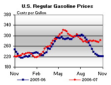 | 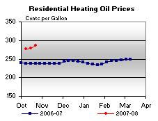 | ||||||
| 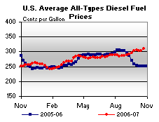 | 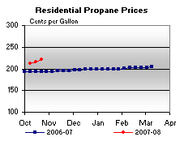 | ||||||
| Retail Data | Changes From | Retail Data | Changes From | ||||
| 10/22/07 | Week | Year | 10/22/07 | Week | Year | ||
| Gasoline | 282.3 | Heating Oil | 286.8 | ||||
| Diesel Fuel | 309.4 | Propane | 220.8 | ||||
| Spot Prices (Cents Per Gallon) | |||||||||||||||||||||||||||||||||||||||
| 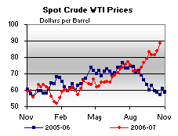 | 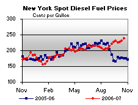 | ||||||||||||||||||||||||||||||||||||||
| 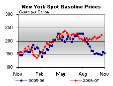 | 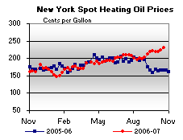 | ||||||||||||||||||||||||||||||||||||||
|
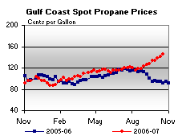 | ||||||||||||||||||||||||||||||||||||||
| Stocks (Million Barrels) | |||||||
| 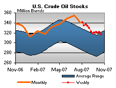 | 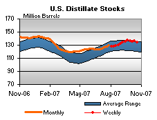 | ||||||
| 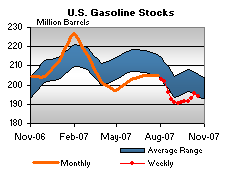 | 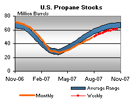 | ||||||
| Stocks Data | Changes From | Stocks Data | Changes From | ||||
| 10/19/07 | Week | Year | 10/19/07 | Week | Year | ||
| Crude Oil | 316.6 | Distillate | 134.5 | ||||
| Gasoline | 193.8 | Propane | 60.991 | ||||